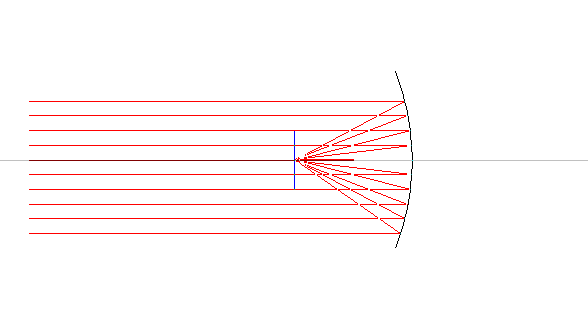

En Paraboloide, som fremkommer ved at dreje en parabel 360° om sin akse er velkendt fra fx billygter. Den samler stråler parallelle med aksen i brændpunktet. Omvendt vil parabolen reflektere lyset fra en lampe anbragt i brændpunktet i et strålebundt parallelt med aksen.
For en parabel med ligningen y = Ax2, ligger brændpunktet i afstanden 1/(4A) fra parablens toppunkt.
Paraboloidspejle anvendes i astronomiske teleskoper med diameter op til 5 meter (Mt. Paloma 200" teleskop).
Hyperboloide spejle anvendes i teleskoper af Cassegrain-type, hvor det primære spejl er parabolsk, men det sekundære spejl er hyperbolsk.
Ellipsoide spejle anvendes ved optisk pumpede faststoflasere, Her anbringes lyskilden i det ene brændpunkt og laserkrystallen anbringes i det andet brændpunkt. Ellipsoiden vil samle al lys udsendt fra det ene brændpunkt i det andet brændpunkt.
Parabolen er dog ikke uden afbildningsfejl, prøv i programmet et lade strålerne danne en vinkel med aksen.
Hvilke afbildningsfejl har en linse, et sfærisk spejl og en parabol?